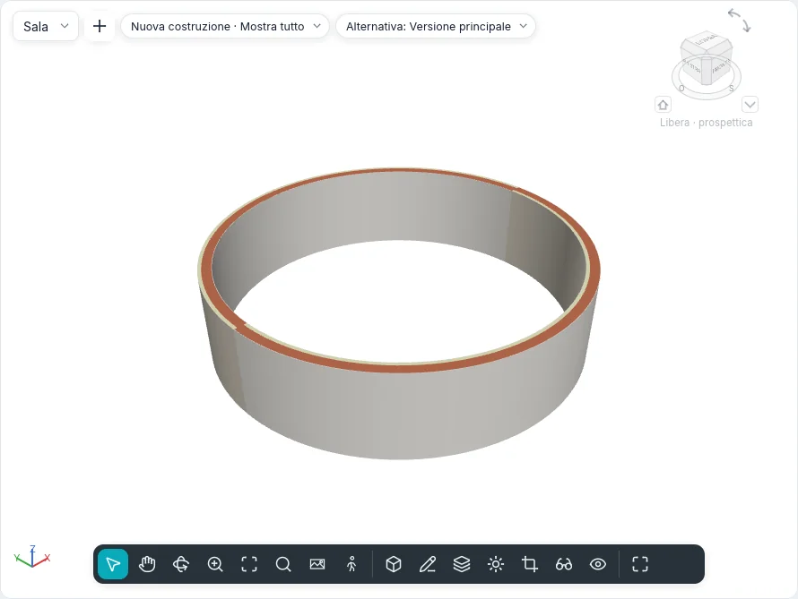

Controsoffitti e colonne
I controsoffitti si fanno in una pianta dei controsoffitti, la vista che guarda in alto dal suo piano di taglio. Colonne e pilastri si posizionano con un clic, nelle piante e nelle viste 3D.

Controsoffitti
Modella ▸ Costruisci ▸ Controsoffitto funziona in una pianta dei controsoffitti. Avviato in un'altra vista, Vai a vista propone le piante dei controsoffitti del progetto: lo strumento non cambia mai la vista da solo.
La scheda contestuale Posiziona controsoffitto ha il gruppo Controsoffitto:
| Strumento | Come funziona |
|---|---|
| Controsoffitto automatico | Il predefinito. Porta il cursore dentro un ambiente chiuso da muri: la regione si illumina; un clic vi crea il controsoffitto. Il contorno segue le facce dei muri; i separatori di ambiente non delimitano un controsoffitto |
| Disegna controsoffitto | Apre la modalità di disegno (Crea contorno controsoffitto), con il gruppo Disegna dei pavimenti: linee, rettangoli, poligoni, archi veri, Seleziona muri, Seleziona linee e Freccia di inclinazione. Un anello chiuso dentro il contorno è un foro. Termina modalità di modifica crea il controsoffitto |
La barra delle opzioni imposta lo Scostamento dal livello del prossimo controsoffitto (2,60 m in un progetto nuovo) e se Delimita ambiente.
Un controsoffitto selezionato mostra Modifica contorno, che ne riapre il disegno.
Tipi
Il selettore dei tipi elenca due gruppi:
- Controsoffitto semplice: senza spessore, solo il suo materiale, il cui motivo vi è disegnato (Generico);
- Controsoffitto composto: strati dall'alto in basso, modificati in Strati del tipo come quelli di muri e pavimenti (Cartongesso 12,5 su orditura, Pannelli 600 × 600). Il suo strato inferiore è quello che si vede da sotto.
La griglia del controsoffitto
Il motivo di modello del materiale visto da sotto è la griglia del controsoffitto: Pannello
minerale 600x600 ha una griglia 600 × 600. È disegnata nella pianta dei controsoffitti e nelle
viste 3D, e la griglia di un controsoffitto nuovo è centrata nel suo contorno, così i pannelli di
bordo su lati opposti sono uguali. Il comando ceilinggrid sposta la griglia (origin, by), la
ruota (angle) o la riporta al centro (centre).
Proprietà
| Proprietà | Significato |
|---|---|
| Livello | Il livello a cui appartiene il controsoffitto |
| Scostamento dal livello | L'altezza della faccia inferiore sopra il livello |
| Delimita ambiente | Se gli ambienti sotto finiscono al controsoffitto |
| Inclinazione | La pendenza, per un controsoffitto inclinato da una linea o da una freccia |
| Spessore, Perimetro, Area, Volume | In sola lettura |
Piante dei controsoffitti
Una pianta dei controsoffitti mostra il livello da sotto, nello stesso verso della sua pianta del pavimento, così le due si sovrappongono: i muri, le colonne e le facciate continue che il suo piano di taglio incontra (2,30 m, sopra porte e finestre, quindi un muro è intero sopra di esse), i controsoffitti con le loro griglie, le griglie e le annotazioni della vista.
- Viste ▸ Crea ▸ Pianta ▾ ▸ Pianta dei controsoffitti apre Nuova pianta con il Tipo delle piante dei controsoffitti: scegli i livelli; con Non duplicare viste esistenti un livello che ne ha già una non è proposto.
- Un livello nuovo ha la sua pianta dei controsoffitti quando Pianta del controsoffitto è spuntata in Tipi di vista di pianta, nella barra delle opzioni di Livello.
- Nell'Indice del progetto le piante dei controsoffitti hanno il loro ramo, Piante dei controsoffitti. Una pianta dei controsoffitti ha il nome del suo livello; il titolo della sua finestra, e la riga di comando, la chiamano Pianta dei controsoffitti: Piano terra.
Nelle piante del pavimento i controsoffitti non sono disegnati: stanno sopra il piano di taglio.
Nelle sezioni sono tagliati con i loro strati; nelle viste 3D sono solidi, uno per strato. I muri si
possono collegare alla faccia inferiore di un controsoffitto con Collega sopra/sotto. I
controsoffitti sono elencati negli abachi e nei computi dei materiali, ed esportati in IFC come
IfcCovering di tipo CEILING.
Colonne e pilastri
Modella ▸ Costruisci ▸ Colonna ▾ propone Colonna architettonica e Pilastro; Strutture ▸ Elementi strutturali ▸ Pilastro avvia direttamente il secondo. Entrambi funzionano nelle piante e nelle viste 3D (sul livello sotto il cursore).
- Un clic la posiziona. Le sue quote temporanee misurano fino ai riferimenti più vicini; scrivi un valore per posizionarla a quella distanza.
- La barra spaziatrice la allinea alle griglie che si incrociano sotto il cursore, oppure la ruota di 90°.
- La barra delle opzioni: Ruota dopo l'inserimento (poi resta selezionata e si ruota con Ruota), Altezza o Profondità, il livello che raggiunge o Non collegata con un'altezza, e Delimita ambiente.
Un pilastro va anche in più punti insieme, dal gruppo Più pilastri:
- Sulle griglie: clicca le griglie (di nuovo per lasciarne fuori una); un pilastro attende a ogni loro intersezione; Fine o Enter li posiziona;
- Sulle colonne: clicca le colonne architettoniche; uno va al centro di ciascuna.
Un pilastro posizionato su due griglie prende da esse il suo Contrassegno di posizione (A-2) e, con Si sposta con le griglie, le segue quando si spostano.
Come sono disegnate
- Nelle piante una colonna tagliata dal piano di taglio è riempita come un elemento tagliato: con il motivo di sezione del suo materiale, o con il retino a dettaglio basso del suo tipo. Un pilastro tiene tutto il suo contorno; una colonna architettonica dentro un muro si fonde con esso, e il suo contorno si vede solo dove sporge dal muro.
- Sotto il piano di taglio una colonna è disegnata in proiezione.
- Nelle viste 3D una colonna circolare è liscia, senza linee lungo il fianco.
- Una colonna che Delimita ambiente fa un'isola nell'ambiente intorno a sé, o una rientranza dove sta contro un muro.
Collega sopra/sotto e Scollega sopra/sotto, con colonne selezionate, collegano la loro sommità a un pavimento, tetto, controsoffitto o piano di riferimento sopra, o la loro base a un pavimento sotto, come per i muri.
Con colonne o pilastri selezionati la barra delle opzioni mostra Associa colonna: con Parte superiore o Base, e tre opzioni: Stile associazione (Taglia colonna: la colonna si ferma sulla faccia dell'elemento e ne segue la pendenza; Taglia destinazione: la colonna resta piatta e un tetto o pavimento che attraversa del tutto perde la sua sezione; Non tagliare: si sovrappongono), Giustificazione associazione (Intersezione minima, Interseca mezzeria colonna, Intersezione massima: dove la sezione incontra un elemento inclinato) e Offset da associazione (verso l'alto se positivo). In Proprietà, sotto Vincoli, Giustificazione in alto, Offset associazione in alto, Giustificazione alla base e Offset associazione alla base si modificano finché quella parte è associata. Scollega sopra/sotto e un clic sull'elemento staccano solo da quello; Dissocia tutti da tutti.
Una colonna architettonica posizionata in un muro o contro la sua faccia si unisce al muro: la riempie il materiale del nucleo del muro, gli strati esterni al nucleo la avvolgono sui lati che sporgono, fra i due non c'è linea e a dettaglio basso prende il retino del muro; all'angolo di due muri si unisce a quello che sovrappone di più. Un pilastro tiene sempre il proprio materiale e taglia il muro in cui sta: il muro perde la sua sezione in pianta, in sezione e in 3D (solo per l'altezza del pilastro) e l'area e il volume del muro, anche negli abachi, diminuiscono. Spostando il muro o la colonna l'unione si ricalcola.
Tipi
Le colonne hanno sezioni parametriche nostre, rettangolari (Larghezza e Profondità; per un
pilastro b e h) o circolari (Diametro), con un materiale: Colonna rettangolare 400 ×
400, Colonna circolare Ø 300, Pilastro in c.a. 300 × 300, 300 × 500 e Pilastro in
c.a. circolare Ø 400. Colonne e pilastri sono esportati in IFC come IfcColumn.